Reject an image by adding its slug to public/charades/charades-movies/reject.txt (append ! to keep it word-only), then re-run node scripts/genimages.mjs.
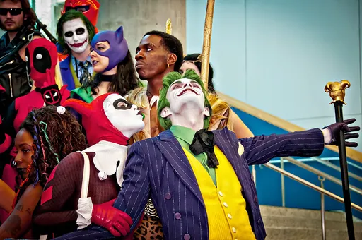
Joker joker CC BY 2.0 · Annette Wamser from Elk Grove, USA · source
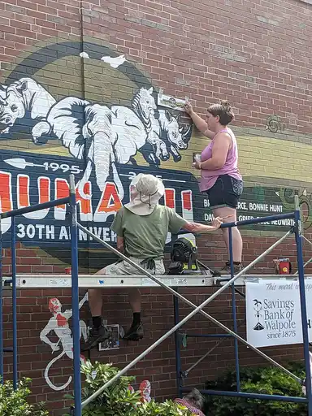
Jumanji jumanji CC BY 4.0 · Artaxerxes · sourceJumanji: The Next Level jumanji-the-next-level CC BY-SA 4.0 · Antimatter78 · sourceJurassic Park jurassic-park CC BY-SA 3.0 · Jun Maegawa · source
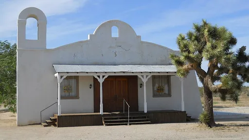
Kill Bill kill-bill Public domain · JGKlein · source
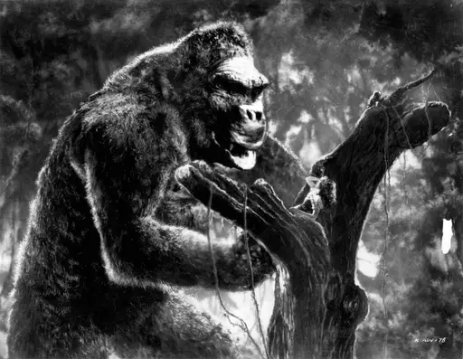
King Kong king-kong Public domain · The chain of ownership of RKO properties after its demise in 1959 is unclear, however, whomever owned distribution rights to RKO properties in 1975 is presumed to have been the author of all press-materials promoting the screening of King Kong in theatres that year. · sourceKnives Out knives-out CC BY-SA 2.0 · GabboT · sourceKong: Skull Island kong-skull-island CC0 · Benoît Prieur · source
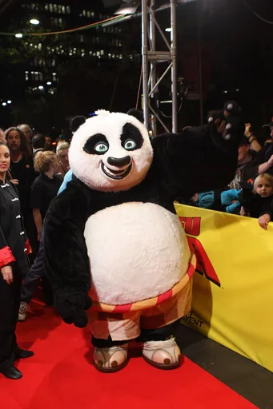
Kung Fu Panda kung-fu-panda CC BY-SA 2.0 · Eva Rinaldi · source
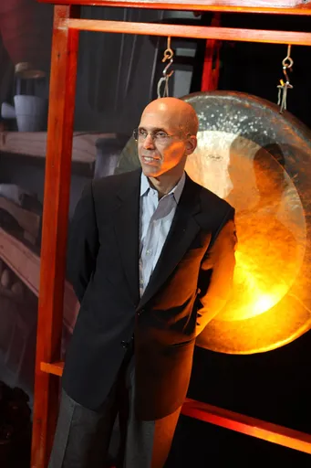
Kung Fu Panda 2 kung-fu-panda-2 CC BY-SA 2.0 · Eva Rinaldi · sourceLa La Land la-la-land CC BY-SA 4.0 · Lionsgate Entertainment · source
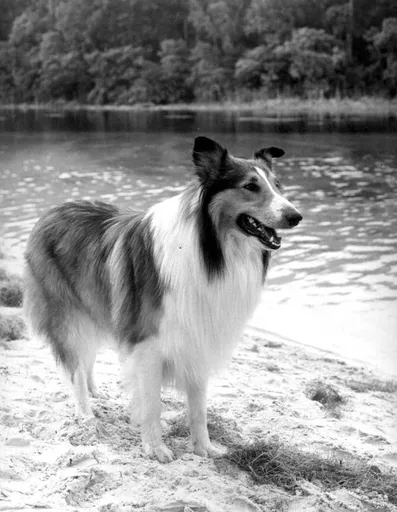
Lassie lassie Public domain · Credit: State Archive of Florida · sourceLaw and Order law-and-order CC BY-SA 2.0 · william · source
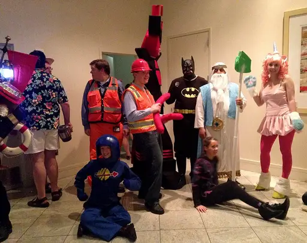
Lego Movie lego-movie CC BY 2.0 · Amy from United States · sourceLife of Pi life-of-pi CC BY 3.0 · Bollywood Hungama · sourceLilo and Stitch lilo-and-stitch CC BY 2.0 · Oliver Ayala · source
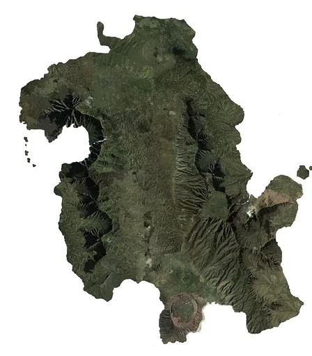
Lost lost Public domain · Kevin51340 · sourceLuca luca Public domain · Jean Bourdichon · source
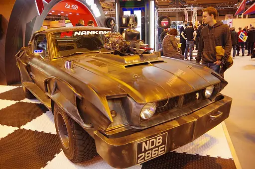
Mad Max mad-max CC BY 2.0 · David Merrett from Daventry, England · source
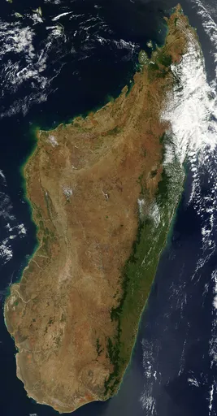
Madagascar madagascar Public domain · Unknown authorUnknown author · source